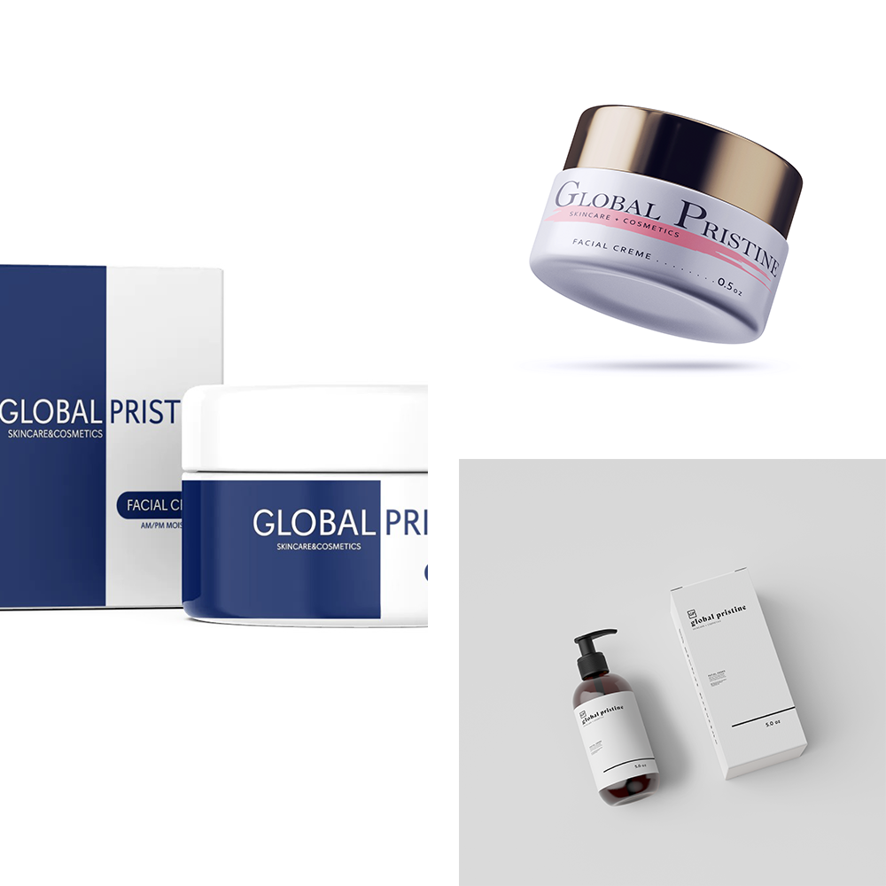
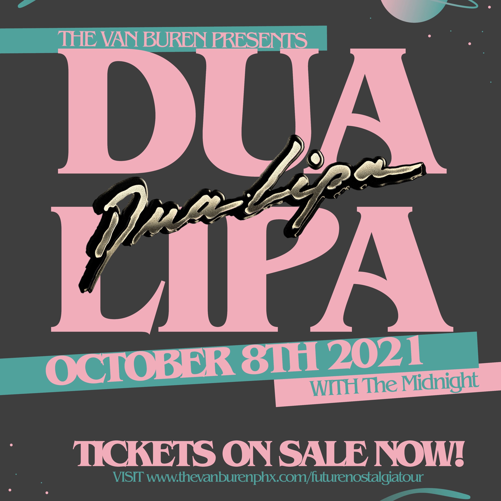

GLOBAL PRISTINE
PACKAGE DESIGN
Global Pristine is a ficitional skincare brand that I had created, for a class, at ASU. The concept revolved around how to approach different styles of design with a single brand name and concept.

MUSIC COVER
ART REDESIGNS
This project was done out of challenging myself with how I could apply my style to a musical artists' album cover. One design is for Grimes and her album Miss Anthropocene. Instead of redesigning an album cover for Lady Gaga's Chromatica album, I decided to take her first 4 tracks, from the album, and design cover art for them.

GHOST IN THE
SHELL
MOVIE POSTER
The concept of this project was to question how you could redesign a movie poster, from the past, and apply your style of design. This project follows some of the most known design trends that artists use today.

DUA LIPA
CONCERT FLYER
This project consisted of focusing on negative space, layout, type, and color. The project promotes an upcoming concert, for Dua Lipa, in Phoenix. The project focuses heavily on a theme revolviong around a rebranding of her Future Nostalgia album tour.

NAMI BAKERY
REBRAND
AND WEBSITE
REDESIGN
For my ASU senior project, I decided to rebrand and redesign Nami Bakery, located in Phoenix, Arizona. The project consists of the rebranding process, the new elements, and 3 UI respopnsive designs that show a comparison between different screen resolutions.